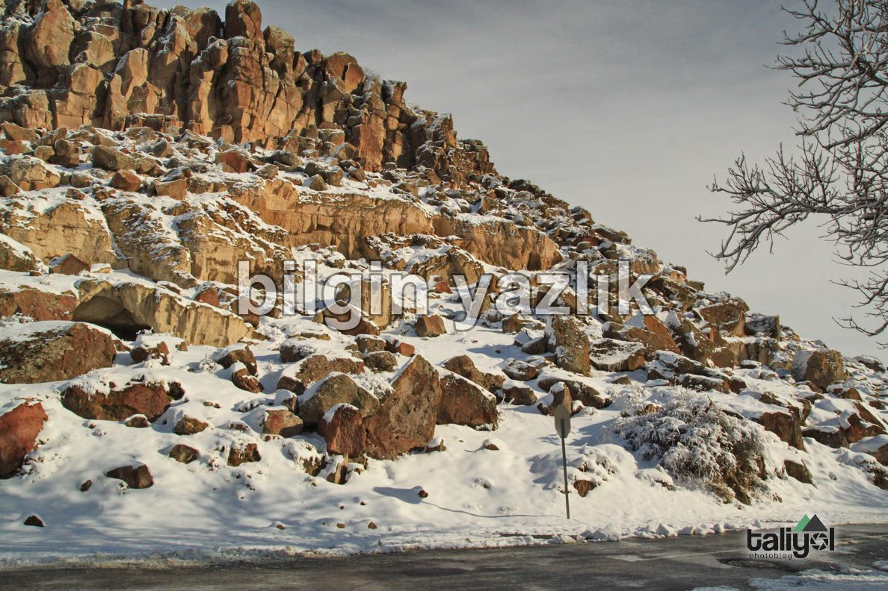
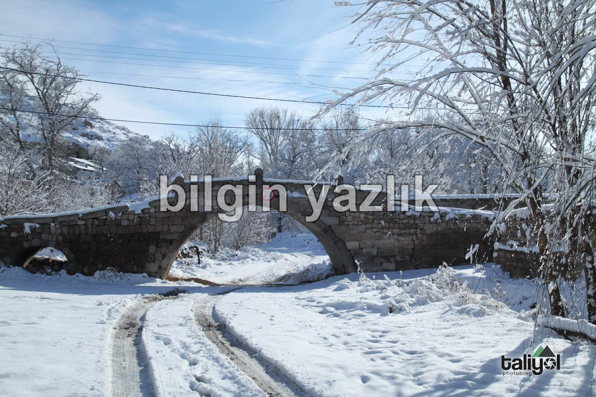
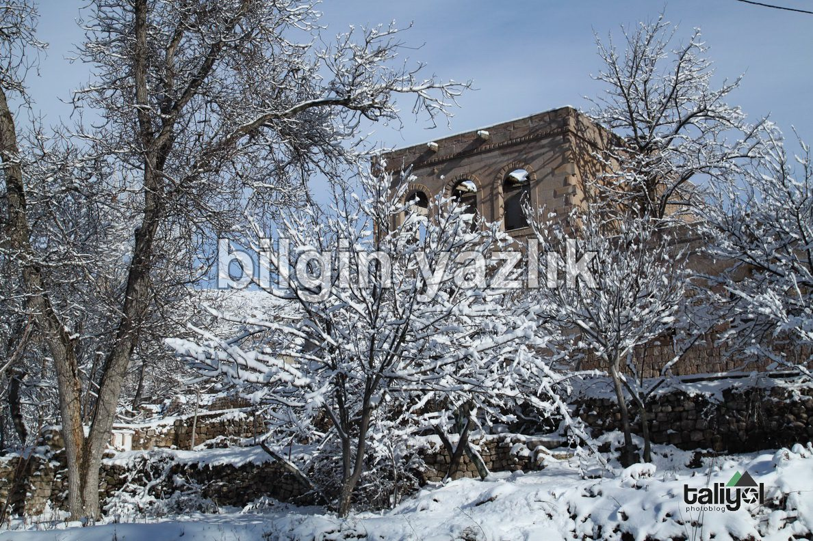
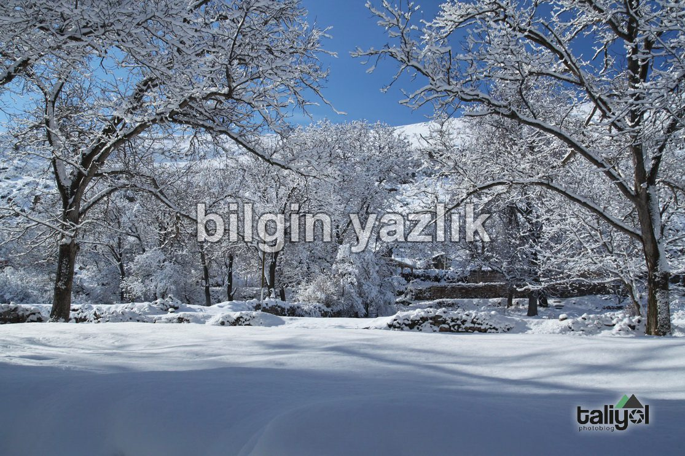
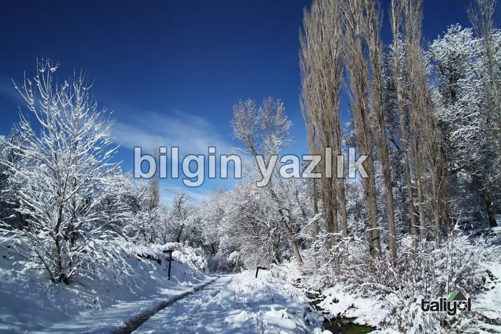
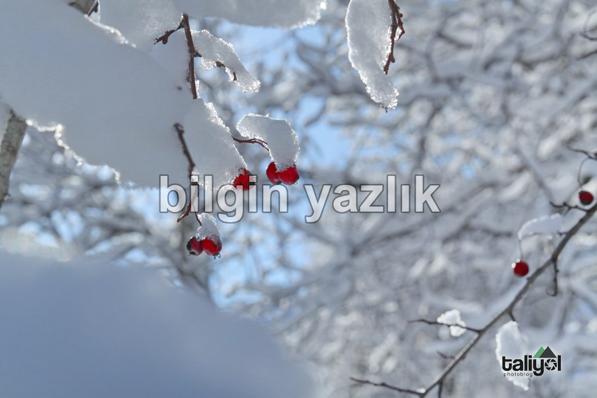
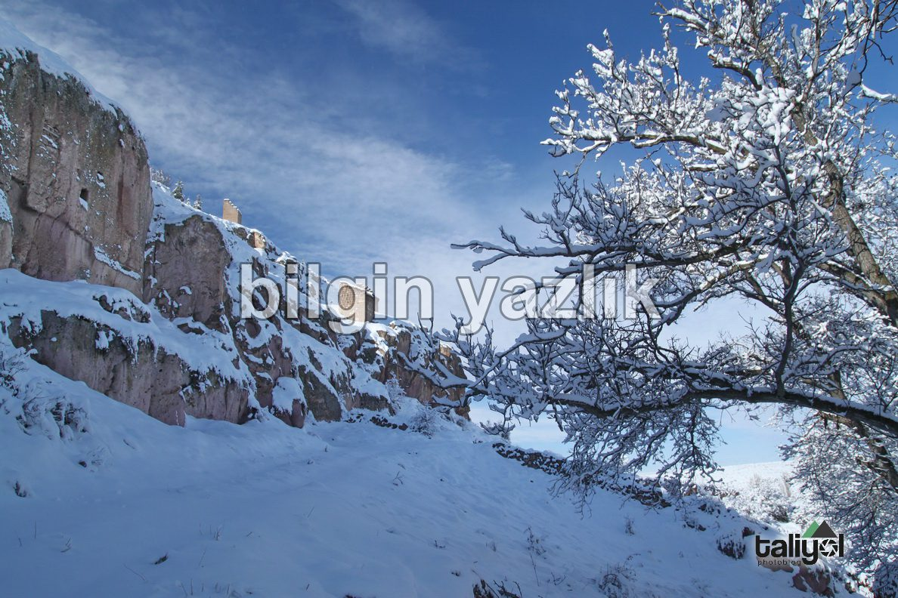

Kayseri & Koramaz · 20 Ocak 2018
Koramaz Vadisi’nde Kış
Koramaz Vadisi baharın çiçekleri ile süslenir, yazın meyveleri ile tatlanır, sonbaharın yaprakları ile sararır da …
Kışın boş mu durur sandınız.
Koramaz Vadisi beyaz yorganını örtünce ayrı bir güzel oluyor.
Kışın soğuğu, karın beyazı, tarihi vadinin sıcak yüzüyle buluşunca, huzur veriyor.







Bu yazı taliyol arşivinden taşınmıştır. · özgün kayıt